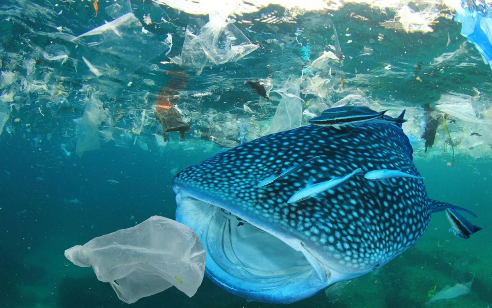
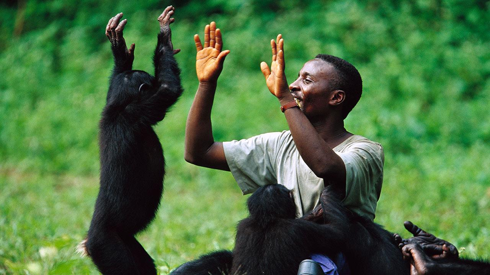

NO PLASTIC!!
The mass of plastic detritus present in the oceans is so enormous that it is called the "7th continent". At this rate, there will be more plastic than fish in the oceans by 2050.
What is plastic pollution? Plastic pollution is caused by the accumulation of plastic waste in the environment. It can be categorized in primary plastics, such as cigarette butts and bottle caps, or secondary plastics, resulting from the degradation of the primary ones. It can also be defined by its size, from microplastics - small particles of plastic dispersed in the environment - to macroplastics. |
Plastic pollution causes Since its commercial development in the 1950s, plastic has been a real success. Its global production is growing exponentially. Its success comes from its remarkable qualities: ease of shaping, low cost, mechanical resistance, etc. Being the ideal material for packaging, plastic is basically everywhere. |
 |
PLASTIC POLLUTION EFFECTS:
 |
 | |
ON THE ENVIRONMENT- |
ON THE ANIMALS- |
ON HUMANS- |
This plastic debris represents a chemical pollution in several ways. They contain compounds that can be chemically transferred to organisms during ingestion. Some of these molecules are potentially toxic and can accumulate in the body. Besides, plastic bags also affect the growth of crops, by hindering the process of photosynthesis in agricultural fields. |
The most direct effect of plastic pollution is the imprisonment of animals in nets or large debris. It is a cause of significant mortality of marine mammals, turtles and birds. A second direct effect is ingestion, that concerns the entire food chain of the marine ecosystem. |
Because of the chemical additives used during plastic production, plastics have potentially harmful effects on human health. Indeed, exposure to toxic chemicals coming out of plastic can cause cancers, birth defects, impaired immunity and other health problems. |
PLASTIC POLLUTION SOLUTIONS:
1.Solar powered boat:
Solar powered boat removes floating plastic debris from the seas and
oceans & processes them onboard to reduce their volume for further recycling.
2.Lactips:
Lactips produces water-soluble and biodegradable thermoplastic pellets made from casein unsuitable for consumption that can replace PVA film packaging, notably use for wrapping detergent.
3.Bioplastic instead of plastic:
1. Bio-Plastic Can Now Be Made From Sugar and CO2
2.Bioplastic Containers Can Be Made From Rice
3.Bioplastic Food Wrappers Can Be Edible
4.Avacado Based Biodegradable Straws Are a Thing Now
5.The Toys of the Future Could Be Made from Bioplastics